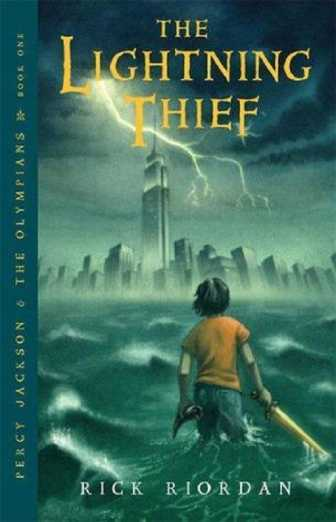
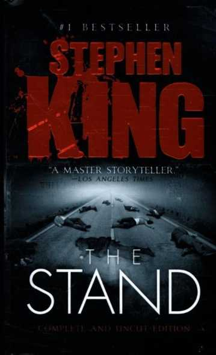
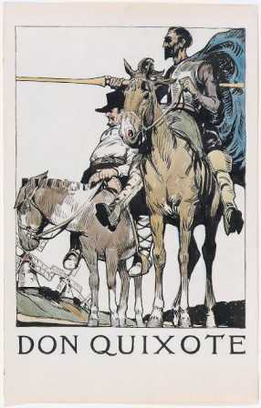

Greetings dear reader, I thank you for stopping by and considering listening to what I have to say. Now I know that right now it might be really tempting to move on or saying that you will return again (the idea that will be buried under huge pile of other information vomited in your brain every moment) but just let me ask you that is your brain feeling overflowing, going on an auto drive mode, feeling emotionless, having a feeling of not doing enough or not doing anything at all? Are you feeling of having departed from the track of your intended life path by some invisible and undisputable force? Then I think that this might be helpful for you. If you have been here till now than I believe that you might be interested in having a piece of my mind, if not, I don’t think that you should waste anymore of your precious time than you already have. Those interested, might grab a cup of tea or coffee or whatever beverage you are into to enjoy yourself alongside with it. Now let’s talk business.
The very first point that I want make here is that there are actual scientifically proven benefits of reading on our mind’s way of thinking, storing memory, reacting and concentrating. Resulting in a stronger and sharper mind, resulting in more creativity than ever before. Now I’m not going to waste your time explaining in overwhelming details the scientific details of reading, for that I’m going to link an article by someone of actual expert on the matter. Instead, what I am going to here is serve mine opinion on the table regarding the subject, based on my life experiences.
This age without a question is overflowing with information. There is flood of extra information that we don’t actually need, resulting our brain feeling heavy and tired. So, what is it that we do when a dam is overflowing with water? We open the flood gates, right? In our case we relax our mind by letting the information go. In other words, taking some time off by grabbing a book of your taste (fiction or non-fiction) with a beverage of your preference siting on a chair breathing in the air the around you or grab your laptop and start righting, anything, you can write about your day, your life, goals, strengths, weaknesses, there are endless possibilities. This relaxing effect of reading and writing is scientifically proven and here is a great article if you want to dive a bit deeper into it.
Remember that everyone in this world goes through some tough time in their lives and at the end of the we are all just human. So, it’s OKAY to relax your mind.
Reviews
A section containing reviews of books

The lightning thielf
Not the best the litrature has to offer but is certainly worth your time.

The Stand
As best and influencle as a post-apoclyptice book can be.

Don Quixote
This book certainly is once a lifetime read.
About this Page
About the content of this page
Greetings dear reader, I thank you for stopping by and this page the information regarding content of this channel.